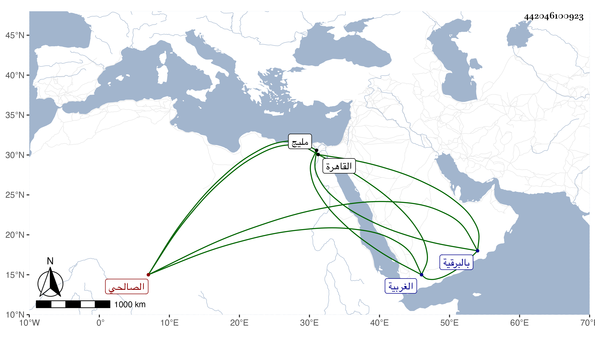

0902Sakhawi.DawLamic.ITO20230111-ara1.EIS1600.442046100923
Biography ID: 442046100923
670
أحمد بن يحيى بن علي بن محمد بن أبي زكريا بن صلح بن عيسى بن محمد بن يحيى الشهاب الصالحي نسبة لمنية أم صلح قرية بناحية مليج من الغربية وبها ضريح ليحيى الأعلى عصري داود العزب وغيره من الأولياء وكذا إلى حارة الصالحية بالبرقية داخل القاهرة ويعرف بابن يحيى . نشأ فحفظ القرآن والشاطبيتين والتيسير والمنهاج وقرأه بتمامه على الصدر الأبشيطي وأذن له في التدريس والإفتاء وكذا حضر في دروس البلقيني والأبناسي وغيرهما وأخذ القراءات عن بعض أهلها وسمع على الزين العراقي في سنة ست وثمانين غالب السنن للدارقطني وعلى الفرسيسي وناب في القضاء ، واستقر في تدريس الفقه بالبرقوقية وجامع الأزهر والقراءات بالمؤيدية والإمامة بالقصر برغبة أخيه له عنها في مرض موته فلما مات وثب عليه الشهاب الكوراني وانتزع البرقوقية منه بعناية كاتب السر ابن البارزي وكذا وثب عليه غيره في المؤيدية محتجا بأن واقفها شرط أنه إن وقع نزول لا يقرر واحد منهما ولكن لم ينهضوا لأخراجها عنه بل باشرها مع تدريس الحاكم وكنت ممن لم يحضر عنده فيه مع قلة بضاعته وجموده وكذا خطب بجامع الأزهر واتفق أنه حصل له أوائل بعض الفصول شبه الإغماء لصفرة كانت تعتريه وهو في الخطبة فماج الناس وظنوا أنه مات فخطب بالناس الشهاب الهيتي وصلى غيره لكونه ألثغ . وعاش صاحب الترجمة حتى مات في سنة تسع واربعين ودفن بتربة كزل الناصري تجاه تربة خوند أم أنوك من البرقية رحمه الله وكان رغب عن نصف إمامة القصر للنور التلواني واستقر بعده في تدريس الحاكم ابن أسد .
